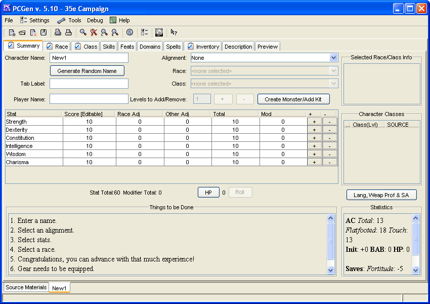

This is the Summary tab. This is the starting point through which the user will build the PC. It is designed to speed up character creation by having the most commonly used aspects available for quick access.
The Character Name field is for the name of the actual character for in play use/reference.
If creating names from scratch is not your forte, you can use the Generate Random Name button and a new window will pop up giving you options to create a new name for your PC.
The Tab Label text field is so you can add to your characters name as well as to change how your characters name appears on the tab labels within PCGen. So if your Character name was Dob Bole, and you added 'The political master!" to the Tab Label field, the character output and tab labels within PCGen would display "Dob Bole, The political master".
The Player Name text field is for your name, so that when the GM has a stack of 50 characters, and he doesn't remember who's character is whose by the character name, it makes their life easier.
The Alignment drop down menu is to select your characters alignment
The Race drop down menu will not become available until you have chose and alignment and is used for quick access to the races available from the source materials you have loaded.
The Class drop down menu will not become available until you have chosen an alignment and is used for quick access to the classes available from the source materials you have loaded.
The Levels to Add/Remove section contains 3 elements:
The Race/Class Info window is merely a reporting window of common information regarding the Race/Class(es) you have.
The Character Classes information window reports what classes you have, what levels in those classes you have, and what source material they come from.
The Stat Total reports how many total character stat points you have used (Starting at zero).
The Modifier Total reports you total stat modifiers from your characters stats.
The HP button will bring up the hit points window to edit what your characters hit points.
The Abilities button will open up a new window where you can assign/change your Languages, Special Abilities, and Weapon Proficiencies.
The Tips window provides hints to some commonly asked questions.
The Statistics window, will give you a short overview of what your characters abilities are based upon the race and class(es) you have selected.